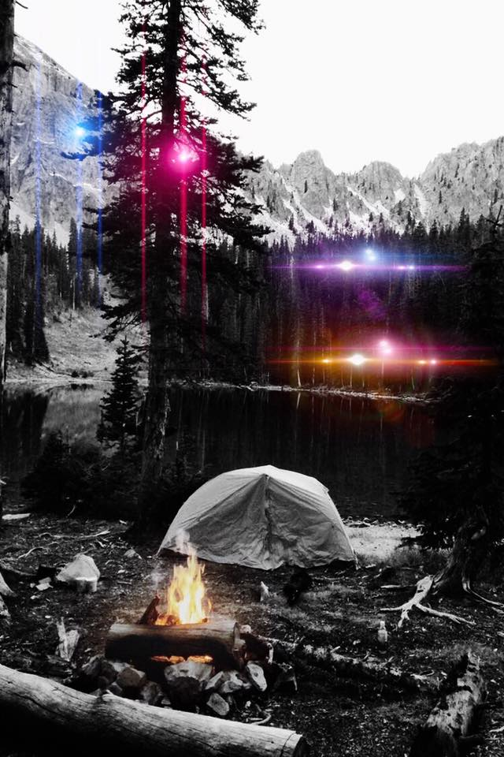
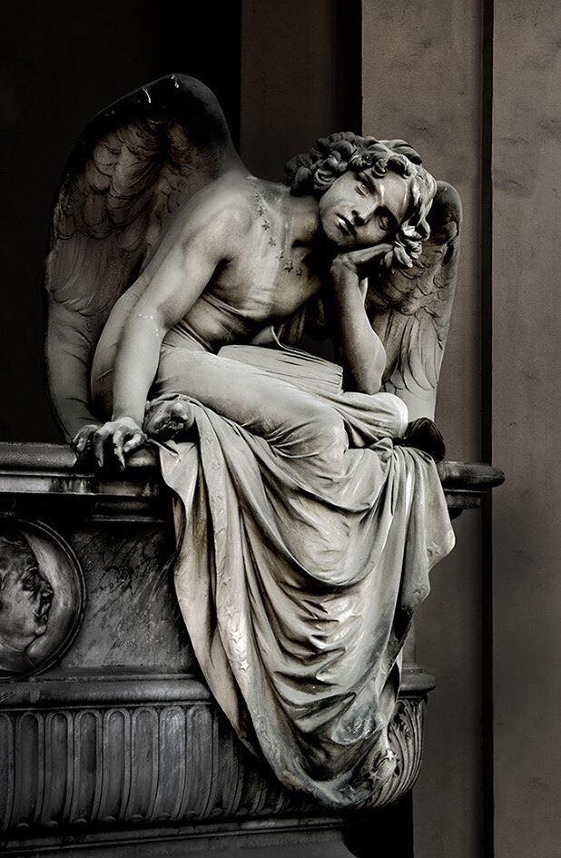
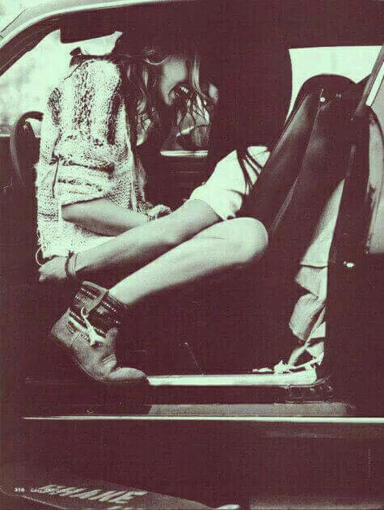

Eros
Story: Adam is in the camp fire and calling Sasha to see how she is but no answered. He starts to get nervous and anxious. Then there’s an earthquake and Adam sees what appears to be four stars in the sky each in a different color. One is blue like the sea, the other red as fire, the other white like the clouds in the sky and the last one brown like the earth. Adam looks at these four stars amaze and then the stars go towards him and end up right up on him. He sees that what he thought ware stars have human forms. Adams starts having an asthma attack but he can’t move. The four things in the sky descend and has they descend he falls on is back and is struggling to breath. The four human forms get around Adam as he is taking his last breaths. The four human forms look at Adam and when Adam sees them he is surprised to see his friends Adams looks up in the sky as he feels like every bit of air is being pulled out of his body.
***
Adam wakes up and it’s already the morning. He is in the middle of the camp and the others go out of their tent looking strange at each other.
Sasha: “What the fuck happened last night!?”
Thomas: “Let’s get out of here now”
Michael: “Yeah”
They get all of their stuff and go back to their houses.
-Eros

Venus
Todos hemos escuchado sobre ángeles guardianes, no entraré en explicación. Ese concepto lo hemos utilizado tanto sin estudiarlo ni escudriñarlo que a veces quedamos como ignorantes frente a personas que SI conocen el concepto literalmente y lo toman en serio.
No obstante, Bonnie era el ángel guardián de Leasaj, tanto así, que cada vez que le fallaba se alejaba y Bonnie tenía este único poder y habilidad de que regresara y fuera puro otra vez. Leasaj, se confesaba delante de ella una y otra vez, y ella seguía viéndolo como su niño, su inocente y miserable niño. Lo cuidada, velaba por él, eran como uña y mugre; incluso, se unieron tanto que la maldad y la bondad se encontraron en un beso e hicieron el amor. Como si dos elementos completamente opuestos se necesitaran tanto.
Bonnie siempre lo admiraba y él contemplaba todo lo que la hacía ella. Siempre se recordaban el uno al otro lo mucho que se necesitaban. Tenían más en común de lo que ellos imaginaban; hasta una cicatriz de una misma herida, en una misma pierna. Bonnie era el pañuelo y Leasaj el consuelo, eran polos opuestos bien llevados de la mano.
Las cosas entre ellos dos cada vez se ponían mejor; sin embargo, su inmadurez, inocencia, falta de capacidad y emociones los llevaron a decisiones que los separaron y jamás se volvieron a ver. Leasaj murió un año más tarde, siendo así, el ángel guardián literalmente de Bonnie.
-Venus

Afrodita
Estábamos en el estacionamiento dándonos cariño, besos, halagos, planificando nuestro próximo día… Entre un apasionado beso, de esos que te quitan el aire, te frenan el corazón, te hacen temblar y pensar en mil cosas macabras, me pregunta “por qué dejaste que te besara aquella noche?” yo pasmada, sin palabras, comencé a reír, le dije “yo sabía que eso iba a pasar” hubo silencio.. Le pregunté “te arrepientes?” A lo que me respondió “Si hoy volviera a esa noche, sin duda lo haría de nuevo” …
- Afrodita.
